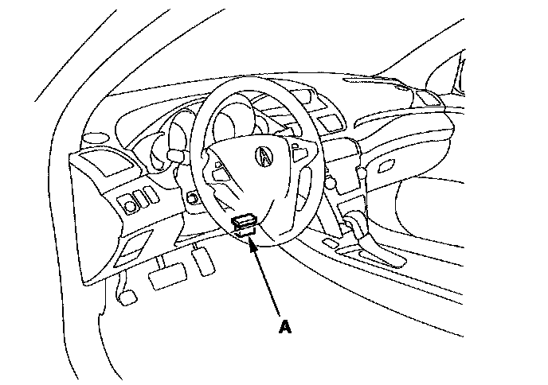

Programming and Relearning
Memorizing Rear Suspension Full Rebound PositionDo the rear suspension full rebound position memorizing whenever you do any of these actions:
^ Replace the active damper control unit.
^ Replace the rear damper unit.
^ Replace the rear suspension stroke sensor.
^ In the specific DTC troubleshooting.
1. With the ignition switch OFF, connect the HDS to the data link connector (DLC) (A) under the driver's side of the dashboard.

2. Turn the ignition switch ON (II).
3. Make sure the HDS communicates with the vehicle and the active damper control unit. If it doesn't, troubleshoot the DLC circuit.
4. Check for DTCs and make sure no DTC is indicated.
NOTE: For specific operations, refer to the Help menu that came with the HDS.
5. Turn the ignition switch OFF.
6. Raise the rear of the vehicle, and support it with safety stands in the proper locations.
NOTE: Verify the rear tires are suspended off the ground.
7. Make sure the rear suspension stroke sensors are installed correctly, and the linkages are properly connected.
8. Turn the ignition switch ON (II).
9. Follow the screen prompts on the HDS to memorize the rear suspension full rebound position.
NOTE: For specific operations, refer to the Help menu that came with the HDS.
10. Turn the ignition switch OFF.